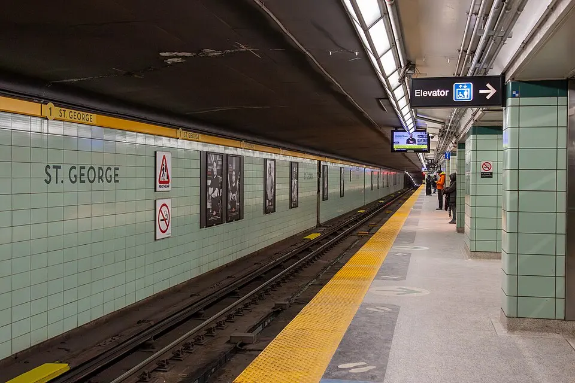

Signal
SignalStation atlas / St George
Station history
St George


Station history
University Avenue trains first terminated on the upper level. A second level had already been built for the future east–west subway.
The lower platforms opened and some trains ran directly between the University and Bloor-Danforth lines during a six-month service trial.
The lower-level Bloor–Danforth platforms opened below the University subway.